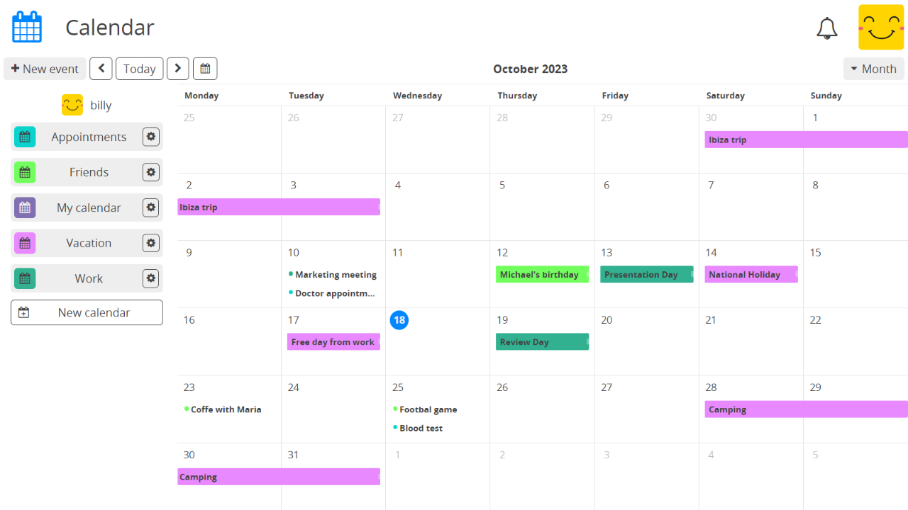

Совместная работа / Взаимодействие#
Профиль#
Зарегистрированные пользователи
У каждого зарегистрированного пользователя на CryptPad есть страница профиля, доступная из пользовательского меню:
Меню пользователя (аватар вверху справа) > Профиль.
Личный профиль#
Ваш профиль теперь может быть изменён прямо из настроек Вашего аккаунта.
Отсюда Вы можете увидеть, как выглядит Ваш профиль для других пользователей, также Вы можете выполнить следующие действия:
Копировать открытый ключ: Копирует ключ, используемый администраторами инстансов и инстансами, предлагающими подписки.
Копировать данные юзера: Как администратор экземпляра, добавьте данные пользователя в формате JSON в свой буфер обмена.
Поделиться: скопируйте ссылку на свой профиль.
Профиль пользователя#
Чтобы просмотреть профиль другого пользователя:
Список пользователей документа, к которому они подключены >
Нажмитена их имени,Если пользователь есть в Вашем списке контаков. Меню пользователя (аватар в правом верхнем углу) > Контакты >``Дважды щёлкните`` на его имени в списке.
На странице профиля другого пользователя:
Отправить запрос на контакт: Добавляет этого пользователя в ваши контакты после того, как он одобрит запрос.
Игнорировать: блокирует уведомления и сообщения от этого пользователя. Они не будут знать, что их заглушили.
Копировать открытый ключ: Копирует ключ, используемый администраторами инстансов и инстансами, предлагающими подписки.
Календарь#

Чтобы добавить события, просто нажмите на нужное время/дату в календаре, просмотрите (перетащите для продолжительности). В качестве альтернативы используйте Новое событие на панели инструментов.
Затем откроется форма создания мероприятия, где Заголовок является обязательным.
При желании Вы можете указать Местоположение и Описание. Поле Описание поддерживает синтаксис Markdown для форматирования его содержимого.
Вы можете создавать повторяющиеся события, с повторами:
Один раз, вариант по умолчанию
Ежедневно
Еженедельно
Ежемесячно
Ежегодно
Ежедневно по будням
Пользовательское расписание, см. ниже:
Повторять каждые X дней, недель, месяцев или лет
Прекратить повторять:
Никогда
В конкретную дату
После X повторов
Чтобы редактировать события, перетащите их на новую дату/время или альтернативно:
Нажмитена событие, чтобы открыть подробное представление.Нажмитена Изменить, чтобы открыть форму редактирования.
Инструменты#
Новое событие
Меню Вид (справа): Месяц, Неделя, День
: переход к предыдущему/следующему периоду в зависимости от вида
Сегодня: нажмите, чтобы отобразить сегодняшний день
Поделиться и Доступ#
Календари CryptPad работают так же, как и любые другие документы, в целях совместного использования и регулирования доступа.
Меню для каждого календаря на боковой панели содержит следующие параметры:
Изменить, чтобы изменить название и цвет календаря
Функции Поделиться и Доступ работают для календарей так же, как и для любого другого документа CryptPad. см. Поделиться / Доступ.
Импорт и Экспорт в стандартный формат
.ics.Свойства
Удалить
Примечание
При экспорте календаря описания событий экспортируются в Markdown.
Команды также могут иметь календари, доступные для всех участников. Просто поделитесь календарем с командой, чтобы добавить его:
Поделиться > Контакты > Выберите команду
Зарегистрированные пользователи
При просмотре календаря, доступного по ссылке, добавьте его в свои календари с помощью: Импортировать этот календарь
Контакты#
Зарегистрированные пользователи
В CryptPad использование контактов делает совместную работу более безопасной и простой.
Добавить контакт#
Поделившись своим профилем:
Скопируйте ссылку: Меню пользователя (аватарка в правом верхнем углу) > Профиль > Поделиться.
Paste and send through the means of your choice (preferably a secure mode of communication).
Затем ваш контакт должен нажать Отправить запрос на контакт.
Вы получите уведомление с запросом,
НажмитеПринять.
На странице профиля другого пользователя CryptPad:
НажмитеОтправить запрос на контакт.
Управление контактами#
Для доступа к странице Контакты:
Меню пользователя (аватар в правом верхнем углу) > Контакты.
Все контакты перечислены в левой части окна. Для каждого контакта:
: отключить звук сообщений и уведомлений.
: Удалить.
: указывает, что этот контакт находится в сети.
Чат с контактами#
На странице «Контакты» нажмите на контакт в списке, чтобы открыть с ним чат в главном окне.
Пишите сообщения в поле внизу и отправляйте их с помощью или Enter.
Загрузите больше истории чата с помощью или удалите историю с помощью .
Примечание
В настоящее время единственный способ получить уведомление о том, что пришло новое сообщение — это держать открытым приложение «Контакты» и включить уведомления веб-браузера. Мы работаем над возможностью получать уведомления CryptPad когда приходят новые сообщения.
Команды#
Зарегистрированные пользователи
Команды CryptPad — это общие пространства для группы пользователей. У команды есть свой CryptDrive, чат и список участников с ролями и разрешениями.
Примечание
Количество команд, к которым может присоединиться пользователь CryptPad, ранее было ограничено 5-ю по причинам производительности.
Чтобы создать команду:
Меню пользователя (аватар вверху справа) > Команды.
Создать.
Чтобы открыть существующую команду:
Меню пользователя (аватар вверху справа) > Команды.
Команды > кнопка Открыть на нужной команде.
Диск команды#
Хранилище документов команды похоже на диск CryptDrive обычного пользователя, но совместно используется членами команды.
Члены команды#
Чтобы управлять членами команды, перейдите на вкладку Участники.
Пригласить участников#
Пригласить участников в команду:
Вкладка Участники > Пригласить участников.
Вкладка Контакты: выберите контакты CryptPad, чтобы пригласить их в команду. Приглашенные получают уведомление о приглашении и могут подтвердить, что хотят присоединиться к команде.
Вкладка Ссылка: Скопируйте ссылку для отправки любым удобным для Вас способом (желательно безопасным способом связи). Эта ссылка является одноразовой. Она становится недействительной после того, как кто-то впервые использует её для присоединения к команде.
Временное имя: используется для идентификации ссылки приглашения в списке ожидающих приглашений.
Пароль: Защитите ссылку от возможного перехвата. (по желанию)
Личное сообщение: Cообщение, которое получатель увидит перед тем, как принять приглашение присоединиться к команде.
Роли и разрешения#
Роль |
Просмотр |
Редактирование |
Управление участниками |
Управление командой |
|---|---|---|---|---|
Читатели |
✅ |
❌ |
❌ |
❌ |
Участники |
✅ |
✅ |
❌ |
❌ |
Администраторы |
✅ |
✅ |
✅ |
❌ |
Владельцы |
✅ |
✅ |
✅ |
✅ |
Разрешения:
Просмотр: доступ к папкам и документам (только для чтения).
Редактирование: создание, изменение и удаление папок и документов.
Управление участниками: приглашать и отзывать участников, изменять роли участников вплоть до Администраторов команды.
Управление командой: Изменить название команды и аватар, добавить или удалить владельцев, изменить подписку команды, удалить команду.
Администрирование#
Роль каждого участника может быть изменена в списке команды. Администраторы и владельцы команд могут управлять участниками с равной или более низкой ролью. Для каждого участника:
Чат#
Командный чат похож на обычный чат с контактами, но в командном чате участвуют все члены команды.
Вкладка Администрирование#
Владельцы команды
Открытый ключ подписи: Используется для идентификации команды на экземплярах, предлагающих подписки.
Название команды: изменить название команды.
Аватар команды: Импорт/изменение аватара для команды.
Загрузить диск команды: сохраните содержимое всех документов в CryptDrive. Когда это возможно, это делается в формате, доступном для чтения другим программным обеспечением. Некоторые приложения создают файлы, которые доступны для чтения только с помощью CryptPad.
Удаление команды: безвозвратное удаление команды и всех её документов.